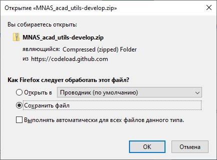
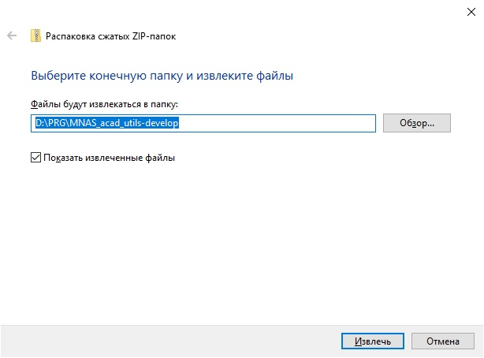

README
Содержание
- 1. Скопируйте файл на ваш ПК.
- 2. Измените расширение с .txt .exe
- 3. Распакуйте архив. Пароль - 12345678
- 4. Прекратите работу AutoCAD
- 5. Из каталога установки выполните программу MNASoft-Path-Add.exe
- 6. Запустите AutoCAD на выполнение
- 7. Выполните команду _CUI
- 8. Используйте команду TRIANG для построения развертки линейчатой поверхности
1 Скопируйте файл на ваш ПК.
Рис. 1.: Рисунок 1
2 Измените расширение с .txt .exe

Рис. 2.: Рисунок 2

Рис. 3.: Рисунок 3
3 Распакуйте архив. Пароль - 12345678
Рис. 4.: Рисунок 4
Рис. 5.: Рисунок 5
<p class=MsoNormal style='page-break-after:avoid'><span lang=EN-US>4 </span> Запустите AutoCAD на выполнение
Рис. 6.: Рисунок 6
4 Прекратите работу AutoCAD
5 Из каталога установки выполните программу MNASoft-Path-Add.exe
Рис. 7.: Рисунок 7
Рис. 8.: Рисунок 8
Нажмите клавишу Enter
6 Запустите AutoCAD на выполнение
7 Выполните команду _CUI
Рис. 9.: Рисунок 9
Нажмите папку со значком «+»
Рис. 10.: Рисунок 10
Выберите файл адаптации из .\MNASacadutils\acad.mnu\MNASoft.cuix
Рис. 11.: Рисунок 11
Нажмите на кнопку OK
Рис. 12.: Рисунок 12